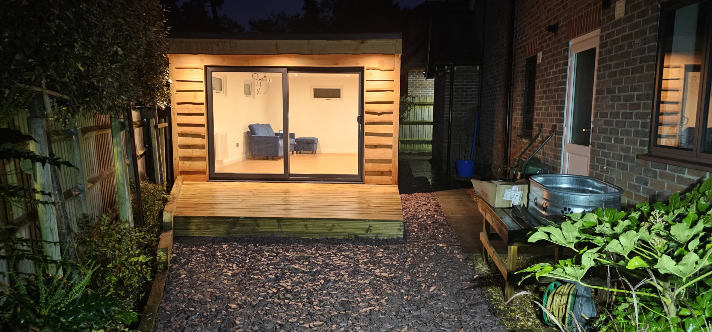
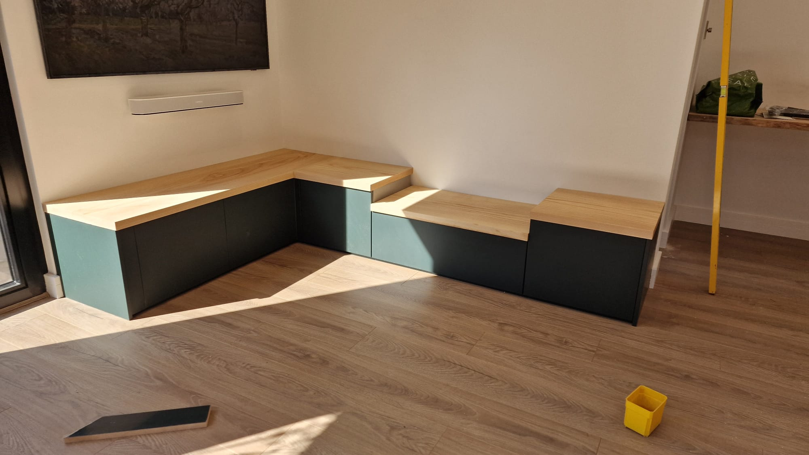
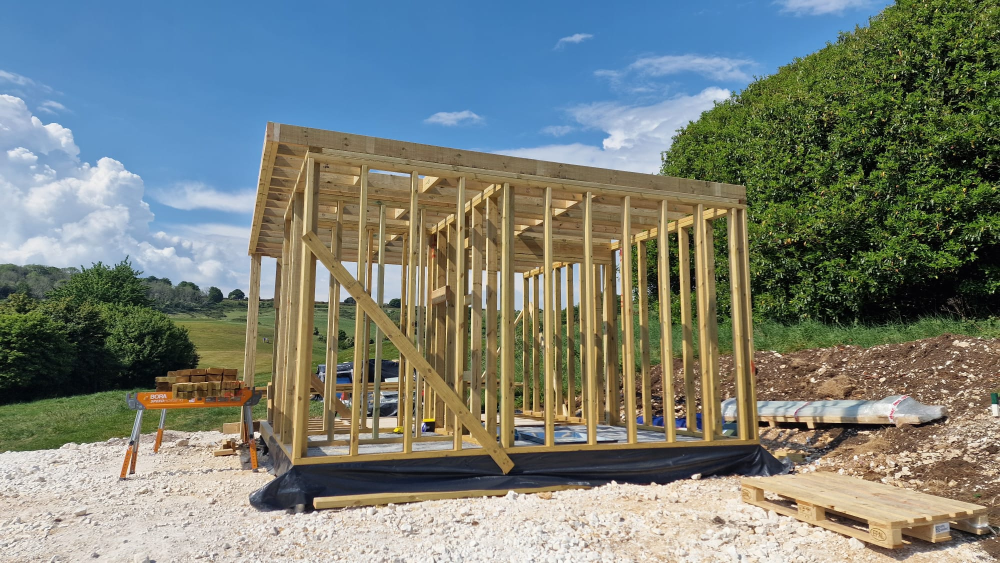
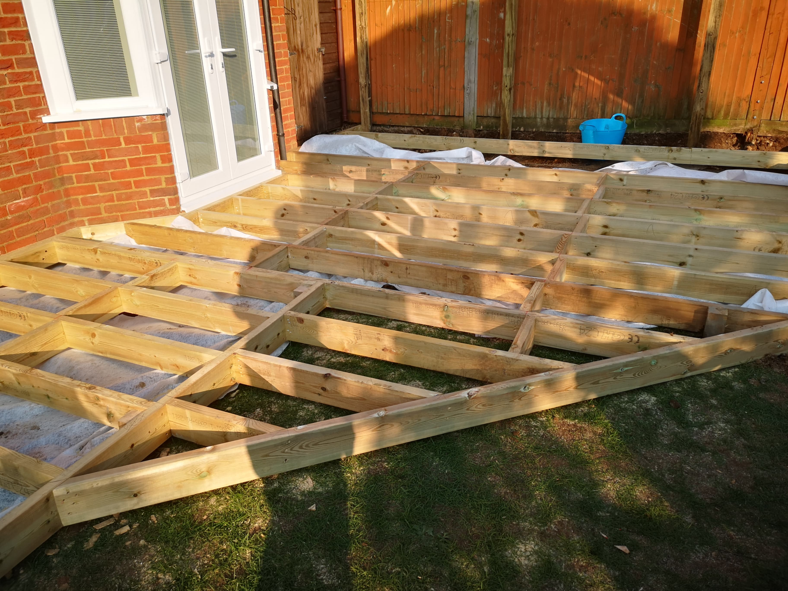
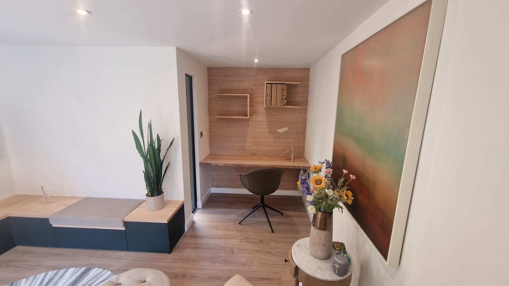
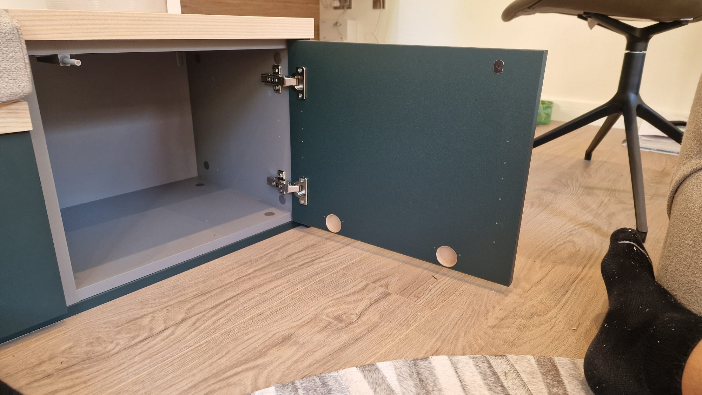
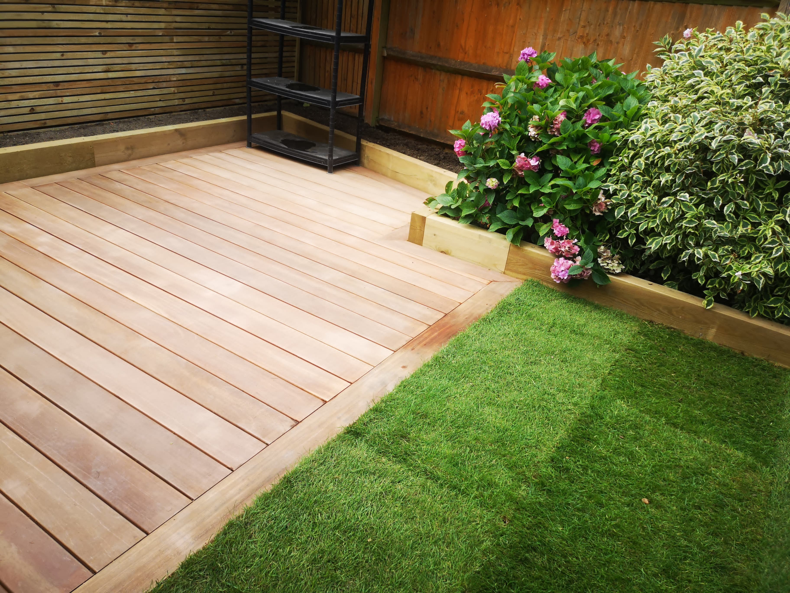
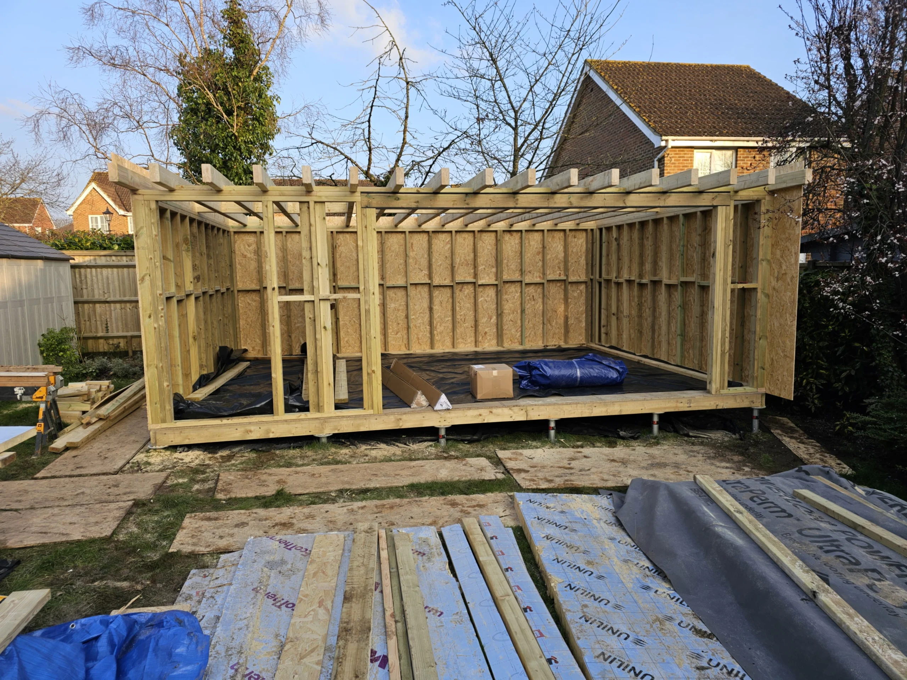

Bespoke Garden Rooms
BESPOKE GARDEN ROOMS
At ARC Sussex Carpentry, we design and build bespoke garden rooms in Brighton that enhance your lifestyle and add real value to your home. Whether you need a peaceful garden office, a creative studio, a home gym, or an entertainment space, our custom-built garden rooms offer a stylish and practical solution.
Handcrafted with precision and built for year-round use, each space is fully tailored to your needs—right down to the insulation, finishes, and electrics. We serve clients not only in Brighton but also across Worthing, Crawley, Haywards Heath, and throughout Sussex.
With years of experience and a reputation for high-quality craftsmanship, we bring visions to life with attention to detail and expert joinery. Whatever your plans, we'll help you create a beautiful space just steps from your back door.
See More of our Bespoke Garden Rooms

Loft Conversions
LOFT CONVERSIONS
Unlock the full potential of your home with expert loft conversions in Brighton by ARC Sussex Carpentry. Whether you're dreaming of a master bedroom with en-suite, a peaceful home office, or a stylish guest suite, our team specialises in transforming unused attic space into functional, beautiful living areas.
Every loft conversion we build is tailored to your home's structure and your personal needs, with careful planning, quality materials, and expert craftsmanship.
Based in Brighton, we also work across Sussex, including Worthing, Crawley, Haywards Heath, and surrounding towns. From initial design to final finish, ARC Sussex Carpentry ensures a smooth process, clear communication, and exceptional results that add real value to your home.
If you're ready to maximise your space with a loft conversion that enhances your lifestyle and property, get in touch with us today.
See More of Our Loft Conversions
Custom Renovations
CUSTOM RENOVATIONS
Transform the home you have into the space you've always imagined with custom renovations in Brighton by ARC Sussex Carpentry. Whether you're breathing new life into a tired kitchen, opening up a brighter, more sociable living area, or giving a dated property a full modern overhaul, we bring craftsmanship and creativity to every corner.
Based in Brighton and working across Sussex—including Worthing, Crawley, Haywards Heath and beyond—our skilled team takes the time to understand your vision and make it real.
We don't just renovate spaces, we reinvent them with intelligent design, bespoke woodwork, and attention to the small details that make a house feel like home. No two projects are the same, and that's exactly how we like it.
If you're ready to reimagine your space, we're here to help guide and build something truly personal.
See More of Our Custom Renovations
First Fix Carpentry
FIRST FIX CARPENTRY
At ARC Sussex Carpentry, we lay the foundations of quality with expert first fix carpentry in Brighton and across Sussex. From structural stud walls and floor joists to roof trusses, door frames and timber frameworks, our precision and planning at the earliest stage ensures the strength and longevity of your build.
Whether you're developing a new home, extending an existing property, or taking on a full renovation, our skilled team works seamlessly with other trades to keep your project on time and to spec.
Based in Brighton, we're trusted by homeowners, developers, and contractors across Worthing, Crawley, Haywards Heath and throughout Sussex. With years of hands-on experience and a reputation for reliability, we bring both speed and accuracy to your construction project.
If you need dependable first fix carpenters who understand the structure behind great design, ARC Sussex Carpentry is the team to call.


Second Fix Carpentry
SECOND FIX CARPENTRY
At ARC Sussex Carpentry, our second fix carpentry services in Brighton and across Sussex bring the finishing touches that turn a building into a home. From fitting doors, skirting boards and architraves to installing staircases, flooring, shelving and bespoke woodwork, we combine craftsmanship with care to deliver crisp, clean results.
We work closely with builders, renovators and homeowners to ensure every detail is measured, aligned and fitted to perfection—whether we're working on a new build in Crawley, a renovation in Worthing, or a period property in Haywards Heath.
With a keen eye for detail and a reputation for professionalism, we take pride in those final elements that truly elevate a space. Based in Brighton, we offer seamless, high-quality carpentry services across Sussex.
Whether you're looking for timeless design or modern flair, ARC Sussex Carpentry ensures every last detail is beautifully finished and built to last.


Decking
DECKING
At ARC Sussex Carpentry, we design and build stunning custom decking solutions in Brighton and across Sussex that transform outdoor spaces into functional, beautiful extensions of your home.
Whether you're dreaming of a peaceful suntrap for relaxing, a stylish platform for entertaining, or a durable surface to elevate your garden's layout, we create timberand composite decking tailored to your space and lifestyle.
From Brighton's coastal terraces to leafy gardens in Haywards Heath, Crawley, and Worthing, we bring precision craftsmanship, quality materials, and thoughtful design to every project.
Our experienced team works closely with you to ensure your decking complements your home and stands the test of time—rain or shine. With ARC Sussex Carpentry, your outdoor space becomes more than just a garden—it becomes a natural extension of your living space, ready to enjoy year-round.
Explore the possibilities and let us build the foundation for your next favourite spot.
Learn More About Our Decking

Get The Ball Rolling
Let us help you realise your dream home and garden transformations
Book A FREE Consultation Now